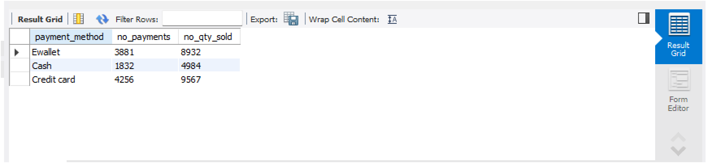
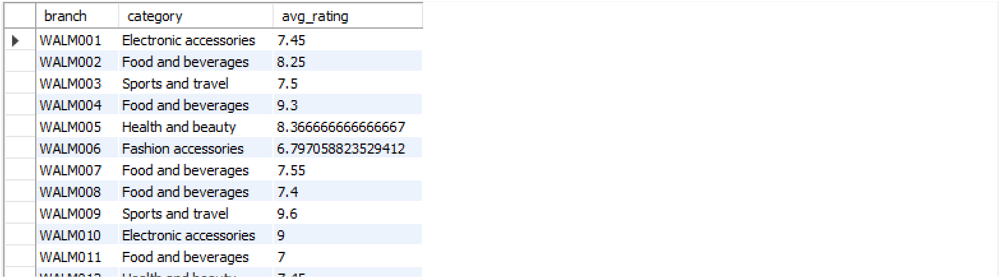
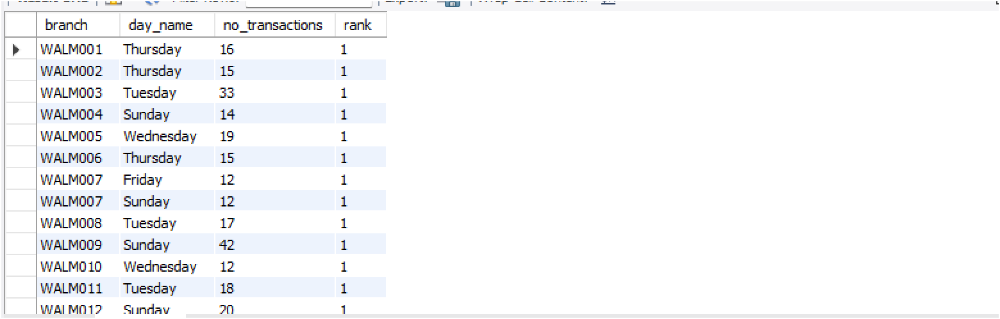

This project analyzes Walmart sales data using SQL to extract business insights.
Analyze number of transactions and quantity sold by payment method.
SELECT
payment_method,
COUNT(*) AS no_payments,
SUM(quantity) AS no_qty_sold
FROM walmart_db.walmart
GROUP BY payment_method;

💡 Insight: E-wallet and credit card dominate transactions.
Identify top-rated category in each branch using window functions.
SELECT branch, category, avg_rating
FROM (
SELECT
branch,
category,
AVG(rating) AS avg_rating,
RANK() OVER (PARTITION BY branch ORDER BY AVG(rating) DESC) AS rank
FROM walmart_db.walmart
GROUP BY branch, category
) ranked
WHERE rank = 1;

💡 Insight: Certain categories consistently perform best across branches.
Identify busiest day of the week for each branch.
SELECT branch, day_name, no_transactions
FROM (
SELECT
branch,
DAYNAME(STR_TO_DATE(date,'%d/%m/%Y')) AS day_name,
COUNT(*) AS no_transactions,
RANK() OVER (PARTITION BY branch ORDER BY COUNT(*) DESC) AS rank
FROM walmart_db.walmart
GROUP BY branch, day_name
) ranked
WHERE rank = 1;

💡 Insight: Weekends show higher transaction volumes.